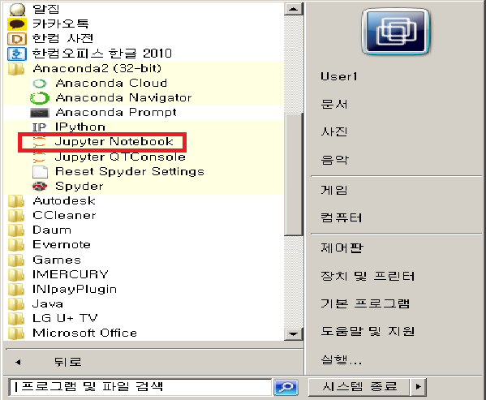
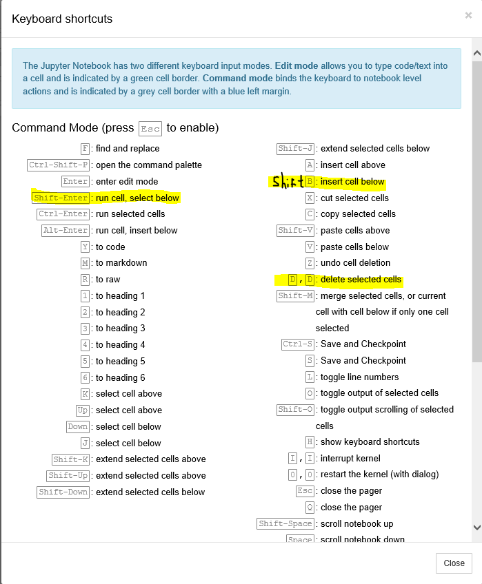

Anaconda 설치
(아나콘다설치) 오른쪽 마우스, 새 탭으로 들어가세요. 주소에 들어가 아래와 같이 클릭하세요.

설치하는 데 시간이 좀 걸려요 ㅎㅎ 설치될 때까지 조금 기다려주세요... ㅎㅎ
모두 설치를 하였으면 맨 위에 있는 자료 다운로드(zip)를 통해 파일을 모두 다운받아주세요
시작 창에서 새로 생긴 아나콘다의 폴더에서 Jupyter notebook으로 들어가주세요.

업로드를 들어가 다운 폴더에 들어가, 배우는 챕터를 하나씩 올려서 들어갑니다.
notebook에서 가장 많이 쓰는 단축키에요. Shift B를 통해 창을 생성해 코드를 꼭 코드를 작성하면서 공부를 하세요! h를 눌러 단축키가 무엇이 있는 지 더 알아볼 수 있어요.
Designer Templates
We’ve crafted some handsome templates for you to use. Go ahead and click 'Continue to layouts' to browse through them. You can easily go back to edit your page before publishing. After publishing your page, you can revisit the page generator and switch to another theme. Your Page content will be preserved.
Creating pages manually
If you prefer to not use the automatic generator, push a branch named gh-pages to your repository to create a page manually. In addition to supporting regular HTML content, GitHub Pages support Jekyll, a simple, blog aware static site generator. Jekyll makes it easy to create site-wide headers and footers without having to copy them across every page. It also offers intelligent blog support and other advanced templating features.
Authors and Contributors
You can @mention a GitHub username to generate a link to their profile. The resulting <abcdefghijklmn> element will link to the contributor’s GitHub Profile. For example: In 2007, Chris Wanstrath (@defunkt), PJ Hyett (@pjhyett), and Tom Preston-Werner (@mojombo) founded GitHub.
Support or Contact
Having trouble with Pages? Check out our documentation or contact support and we’ll help you sort it out.